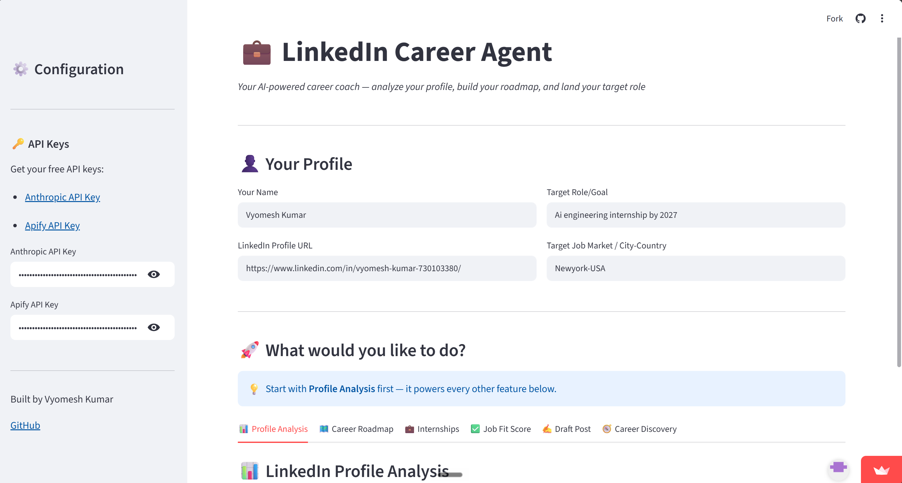

LinkedIn Career Agent
Turning a career goal into a clearer next step.
An AI-powered assistant for profile audits, career roadmaps, internship eligibility, job-fit feedback, and conversational follow-up.

Inside the project
Purpose & contribution
I built a deployed career assistant with 10 user-facing features, combining profile information with Claude-powered analysis and a Streamlit interface.
How it works
Apify supports profile retrieval, Claude provides analysis, and persistent JSON session memory carries context into follow-up conversations.
Testing & evidence
The project includes 23 pytest cases using mocked API calls. Testing identified an input-validation bug that was fixed during development.
Before trying the demo
The demo requires your own Anthropic and Apify API keys. Enter them only in the demo, never on this portfolio. AI-generated career feedback should be reviewed in context.